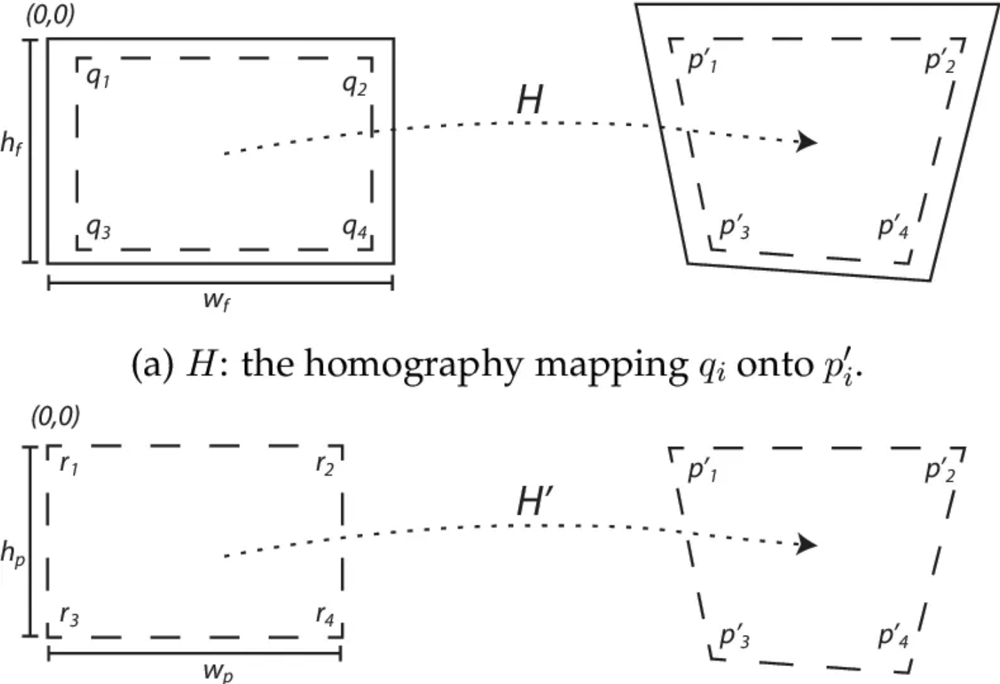
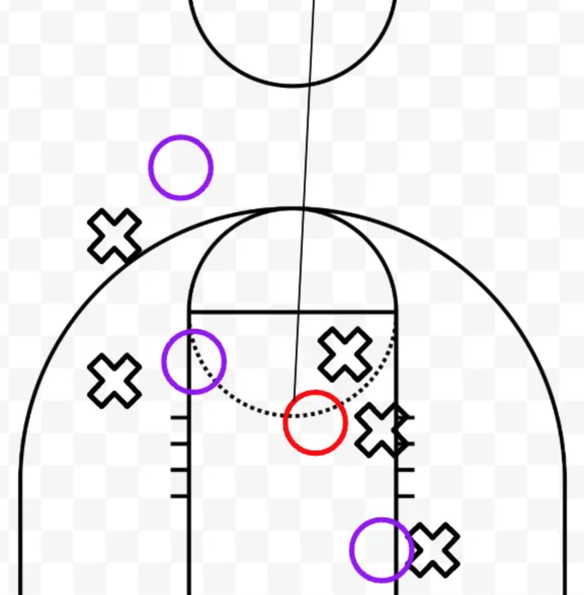
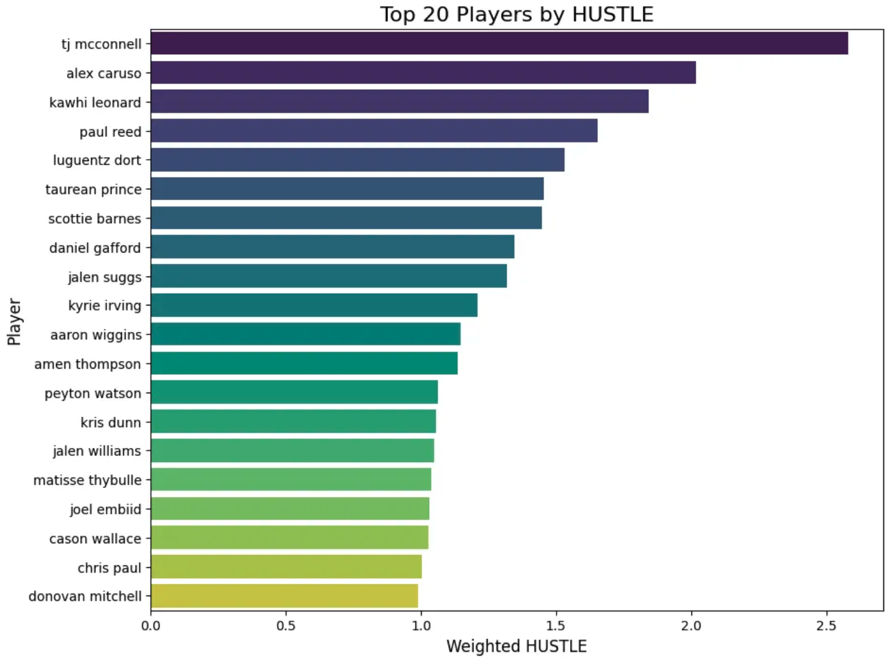
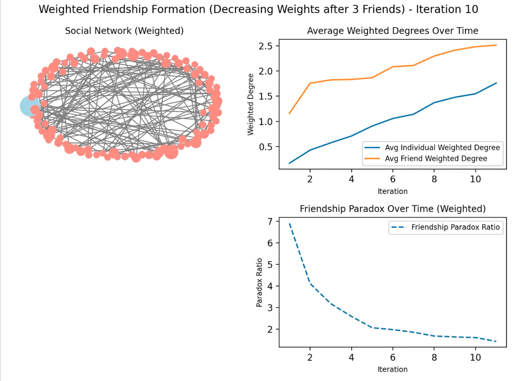

Projects and Writing
External links, identifying references, and publication attributions have been removed. Several of the models described below are actively used in public-facing environments, and this page reflects a generalized technical overview without direct identifiers.
Selected Projects:

PRISM: Prospect Role Identification & Scouting Model
Basketball Analytics · Multi-Stage Predictive Architecture
Supervised projection framework trained on rolling 3-year draft cohorts to predict
5-year NBA Estimated Plus-Minus (EPM) and binary rotation outcomes. Feature set
includes possession-normalized box metrics, synergy play-type efficiency splits,
usage-adjusted assist/turnover ratios, stock rates, on/off RAPM derivatives,
and percentile-based cross-era scaling. Model stack combines isotonic calibration,
shrinkage priors for low-sample stabilization, and pairwise gradient boosting
(LambdaRank-style objective) to optimize ordinal ranking fidelity rather than
raw regression loss. All training windows are leakage-controlled with draft-year
cutoffs to preserve forward validity.
ELWAY: Team Projection Model
Football Analytics · Bayesian Elo Decomposition
Bayesian extension of classical Elo that decomposes team strength into
quarterback-driven and non-quarterback components. Weekly ratings are updated
using a logistic win-probability likelihood with dynamic K-factors scaled by
pregame uncertainty and margin-of-victory adjustments. Quarterback value
inputs are derived from play-level impact estimates and replacement baselines,
with injury-state transitions explicitly modeled to substitute backup-level
expectations. Season forecasts and playoff odds are generated via large-scale
Monte Carlo simulation incorporating schedule structure, reseeding rules,
and probabilistic injury persistence.
QBERT: Quarterback Rating Model
Play-Level Impact & Era-Adjusted Evaluation
Play-by-play expected points framework estimating quarterback-specific
marginal contribution above replacement after controlling for down-distance
state, game situation leverage, opponent defensive efficiency, and era-based
scoring environment. Applies ridge regularization for stability across
low-volume passers and Bayesian shrinkage toward prior performance to
mitigate small-sample volatility. Outputs posterior-adjusted QB impact
distributions used for cross-era comparisons and integration into team-level
forecast models.

Player Tracking System
Computer Vision · Spatial Feature Extraction
Homography-based transformation pipeline mapping broadcast camera frames to
canonical half-court coordinates. Utilizes OpenCV feature detection for court-line
keypoints, RANSAC-based matrix estimation for perspective correction, and frame-
level object detection to extract player centroids. Outputs spatiotemporal
trajectories used to compute closeout velocity, help rotation timing, contest
distance, and possession-level spatial entropy metrics.

True Rebounding Rate
Lineup-Adjusted Impact Metric
Possession-level rebounding attribution model separating individual rebound
probability from team scheme effects. Uses logistic regression conditioned on
shot location, rebound distance, lineup height distribution, and box-out
assignment proxies. Produces marginal rebound probability above expected,
normalized per 100 opportunities and adjusted for teammate contest density.

HUSTLE Index
Composite Defensive Activity Model
Composite z-score aggregation of off-ball defensive actions including closeout
distance reduction, deflection rate per defensive possession, loose-ball recovery
probability, screen navigation efficiency, and help rotation latency. Features are
standardized within role clusters and weighted via principal component loadings
to capture shared variance across high-effort defensive behaviors.

Network Perception Analysis
Graph Theory · Degree Distribution Modeling
Analytical study of the Friendship Paradox using synthetic and empirical network
simulations. Models node degree distributions under preferential attachment and
random graph processes to quantify perception bias magnitude as a function of
variance in degree centrality. Includes Monte Carlo validation and closed-form
expectation derivations.